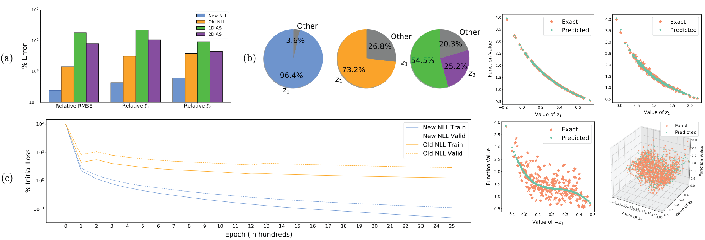

Learning the Structure of Level Sets from Sparse Data
 \(\newcommand{\bb}[1]{\mathbf{#1}} \newcommand{\nn}[1]{\left\|#1\right\|} \newcommand{\mmu}{\bm{\mu}} \newcommand{\IP}[3]{\left\langle #2, #3\right\rangle_{#1}} \newcommand{\kdf}{\mathrm{ker}\,f'} \newcommand{\idf}{\mathrm{im}\,f'} \DeclareMathOperator*{\argmin}{arg\,min}\)
let \(U \subset \mathbb{R}^n\) be a bounded domain and consider the problem of approximating a continuously differentiable function \(f:U \to \mathbb{R}\) based on some predefined samples \(\{ \mathbf{x}^s, f(\mathbf{x}^s), \nabla f(\mathbf{x}^s) \}_{s\in S}\) of the function and its gradient vector field. To generate a pointwise approximation to $f$, it is reasonable to seek a regression approximant \(\tilde{f}:U\to\mathbb{R}\) which satisfies the minimization condition
\[\tilde{f}(\bb{x}) \in \argmin_{g\in C^1(U)} \nn{f(\bb{x}) - g(\bb{x})}_2^2. \label{eq:reg}\]However, if the dimension \(n\) is large relative to the number \(\lvert S \rvert\) of available samples (i.e. sparse data), training a model to approximate \(f\) directly becomes infeasible. Indeed, unless the training data itself has a hidden low-dimensional structure, popular unsupervised learning methods such as feed-forward neural networks are prone to overfitting, leading to poor accuracy on new data as a result of inadequate generalizability.
The Nonlinear Level set Learning (NLL) method proposed by Zhang et al. aims to circumvent this issue by nonlinearly ‘projecting’ the input data into a low-dimensional space where the function \(f\) changes the most on average. This can be thought of as follows: consider computing a diffeomorphism (differentiable bijection with differentiable inverse) \(\bb{g}:\mathbb{R}^n \to \mathbb{R}^n\), \(\bb{z} = \bb{g}(\bb{x})\) and \(\bb{h}\circ\bb{g}\) is the identity on \(\mathbb{R}^n\), which separates the domain of the push-forward function \(f\circ \bb{h}\) into global pairs \(\bb{z} = (\bb{z}_A, \bb{z}_I)\) of “active” and “inactive” coordinates. If \(\bb{g},\bb{h}\) can be constructed such that the sensitivity of \(f\circ\bb{h}\) to the coordinates \(\bb{z}_I\) is sufficiently low, then it is reasonable to conclude that the transformed data \(\bb{g}(\bb{x})\) lies in a lower-dimensional submanifold of the ambient space \(\mathbb{R}^n\), and for any inactive coordinate \(z^i\in\bb{z}_I\) the domain of \(f\circ\bb{h}\) can be restricted to \(\mathrm{Span}\{z^i\}^\perp\) with negligible impact on the function value. Therefore, regression can be applied to obtain a lower-dimensional mapping \(\hat{f}:\mathbb{R}^{\lvert A \rvert} \to \mathbb{R}\) such that \(f(\bb{x}) \approx \hat{f}(\bb{z}_A)\). Writing \(\bb{z}_A=:\bb{g}_A(\bb{x})\) to denote the first \(\lvert A \rvert\) components of the function \(\bb{g}\), this means computing a generalized ridge function
\[\hat{f}(\bb{g}_A(\bb{x})) \in \argmin_{\varphi:\mathbb{R}^{|A|}\to\mathbb{R}} \nn{f(\bb{x}) - \varphi(\bb{g}_A(\bb{x}))}_2^2, \label{eq:nllreg}\]where \(\bb{g}\) acts as the (nonlinear) projection operator. Once \(\bb{g}\) is obtained, computing the required \(\hat{f}\) in \eqref{eq:nllreg} is automatically a more feasible regression problem than \eqref{eq:reg}, since almost all of the variation in \(f\) has been concentrated in the lower dimensional image $\bb{z}_A$ where the data is automatically more dense. Most importantly, the necessary projection from \(\bb{z}\) to \(\bb{z}_A\) is simple and canonical: after truncating the domain of \(\bb{h}\) by the span of the inactive variables \(\bb{z}_I\), the active variables \(\{ \bb{z}_A \}\) parameterize the low-dimensional inputs by definition.
Computing this mapping in our case is done by minimizing an inspired loss functional in the context of a particular “reversible neural network” (RevNet) architecture (also employed in the original NLL paper). The key ingredients to this are the guaranteed invertibility of the RevNet along with the coercivity of the loss. In particular, we minimize
\[L(\bb{h}) = \frac{1}{|S|}\sum_{s\in S} \nn{(f\circ\bb{h})'(\bb{z}^s)}^2_\perp, \label{nllloss3}\]where \(\nn{\cdot}_\perp\) denotes the norm on the subspace orthogonal to the active direction \(\bb{e}_1\) at each point, i.e. the trace of the quadratic form \(\sqrt{\IP{}{\cdot}{\cdot}}\) with respect to the basis \(\{ \bb{e}_2,...,\bb{e}_n \}\). This encourages the algorithm to find a mapping \(\bb{h}\) which reduces the composite function \(f\circ\bb{h}\) to a function of one variable \(\bb{z}_1 = \bb{g}_1(\bb{z})\). Note that (under some assumptions on \(f\)) the loss \(L\) is coercive on the complement of \(\bb{z}_1\), allowing the network to find something which globally approximates the local mapping guaranteed by the Implicit Function Theorem in a neighborhood of each point. Experiments show that this is quite successful, producing results which substantially improve over those produced by the original NLL algorithm.
A (mostly) clean implementation of our algorithm can be found on my code page.
Relevant Publications
(NLL2) Vikash Chaurasia, Max Gunzburger, Lili Ju, Yuankai Teng, Zhu Wang. Nonlinear Level Set Learning for Function Approximation on Sparse Data with Applications to Parametric Differential Equations. Preprint version available here.
(NLL) Guannan Zhang, Jiaxin Zhang, Jacob Hinkle. Learning nonlinear level sets for dimensionality reduction in function approximation. Advances in Neural Information Processing Systems, Vol. 32, Curran Associates, Inc., 2019. Available here